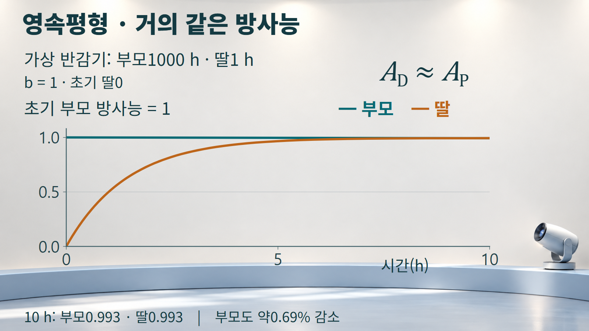
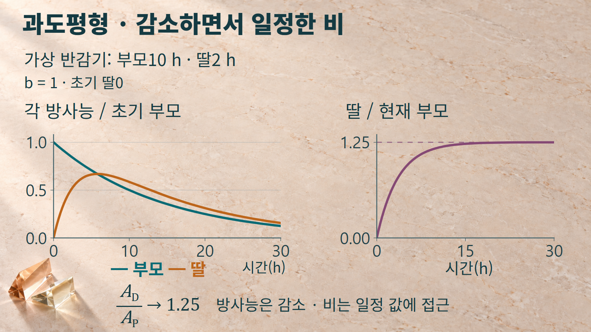

방사성붕괴와 시간 · 055
방사평형
영속평형과 과도평형에서 일정해지는 방사능의 관계
모핵종이 딸핵종을 만들고 딸핵종도 스스로 붕괴할 때, 두 방사능은 서로 다른 모습으로 변합니다. 적절한 반감기 관계와 충분한 시간이 주어지면 두 값의 비가 일정한 관계에 가까워집니다. 그 과정에서 어느 값이 거의 같아지고, 어느 비가 일정해지는지를 구별하는 것이 방사평형을 이해하는 핵심입니다.
방사평형은 붕괴가 멈추는 상태가 아니라 방사능의 관계가 일정한 값에 가까워지는 현상입니다.
방사능 사이의 평형
방사능은 어떤 핵종이 단위 시간에 얼마나 많이 붕괴하는지를 나타내는 양입니다. 모핵종의 방사능을 AP, 딸핵종의 방사능을 AD라고 쓰면, 이 글에서 비교하는 비는 같은 시각의 AD/AP입니다. 두 값이 모두 줄어들더라도 비가 거의 일정할 수 있으므로 ‘평형’과 ‘정지’를 같은 말로 받아들이지 않습니다.
핵수도 방사능과 구분합니다. A=λN이므로 방사능이 비슷해도 붕괴상수 λ가 다르면 핵수 N은 다릅니다. 반감기가 짧아 λ가 큰 딸핵종은 더 적은 핵수로도 부모와 비슷한 방사능을 가질 수 있습니다. 모핵과 딸핵이 같은 개수만큼 남아 있어야 평형이라는 해석은 맞지 않습니다.
딸의 반감기가 부모보다 훨씬 짧으면 영속평형, 부모보다 짧지만 그 차이가 아주 크지는 않으면 과도평형의 특징이 나타납니다. 영속평형은 과도평형 관계의 특별한 근사로 이해할 수 있습니다. 이름을 외우기보다 부모와 딸이 변하는 시간척도를 먼저 비교합니다.
시간에 따라 형성되는 관계
외부에서 핵종이 들어오거나 분리되지 않는 두 핵종 사슬을 생각합니다. 붕괴상수는 일정하고 처음에는 딸핵종이 없다고 둡니다. 부모 붕괴 중 관심 딸핵종을 만드는 비율을 b라고 하면 딸의 생성률은 bAP, 소멸률은 AD입니다. 이 두 항의 차이가 딸 핵수의 변화율을 결정합니다.
dND/dt = bλPNP − λDND
딸의 붕괴상수가 부모보다 큰 λD>λP 조건에서, 초기 딸0인 시간해를 방사능 비로 나타내면 다음과 같습니다. 여기서 t는 경과 시간이고 λ와 t는 서로 맞는 시간 단위를 사용합니다.
IAEA 교재의 인쇄20~22쪽, 식1.23~1.29는 b=1인 사슬의 시간해와 평형을 설명합니다. 위 식의 b는 관심 경로로 들어오는 공급항에 분기비를 곱해 확장한 것입니다. 시간이 충분히 지나면 대괄호 안 지수항이 작아지고, 비는 bλD/(λD−λP)에 가까워집니다. 유한한 시각에 갑자기 정확한 상수로 바뀌는 과정은 아닙니다.
λP가 λD보다 매우 작고 b=1이면 이 비는 거의1입니다. 반면 두 상수의 차이가 상대적으로 작으면 같은 b=1에서도 비가1보다 큰 값에 접근합니다. 딸의 방사능이 부모보다 크다는 사실만으로 이미 평형에 도달했다고 판정하지 않고, 시간에 따른 비의 변화를 살펴봅니다.
영속평형과 과도평형의 계산
아래 두 예시는 실제 핵종의 측정값이 아닌 가상 반감기이며, b=1과 초기 딸0을 공통으로 적용합니다. 처음 부모의 방사능 AP(0)을1로 놓은 상대값을 사용합니다. 그래프의 AD/AP(0)과 같은 시각의 방사능 비 AD/AP(t)는 분모가 다르므로 서로 바꾸어 읽지 않습니다.
예시1: 부모 반감기1000시간, 딸 반감기1시간입니다. λ=ln2/T로 계산하면 λP≈0.0006931 h−1, λD≈0.6931 h−1입니다. 5시간 뒤 부모 상대방사능은약0.9965, 딸은약0.9663이며 딸/모 비는약0.9696입니다. 처음0이었던 딸의 방사능이 부모에 가까워지는 과정입니다.
10시간 뒤에는 부모약0.9930925, 딸약0.9931090으로 매우 비슷합니다. 그러나 부모도 이10시간 동안 약0.69% 감소했습니다. 유한한 부모 반감기를 그대로 계산한 충분히 긴 시간의 비는1이 아니라 약1.001입니다. 여기서 ‘거의 같다’와 ‘부모가 거의 일정하다’는 표현은 시간척도 차이를 활용한 근사입니다.
부모의 반감기가 훨씬 길면 짧은 관찰 구간에서 딸 방사능이 거의 일정한 부모 방사능에 가까워집니다.

예시2: 부모 반감기10시간, 딸 반감기2시간입니다. λP≈0.06931 h−1, λD≈0.34657 h−1이므로 충분한 시간 뒤 비는0.34657/(0.34657−0.06931)≈1.25입니다. 10시간 뒤 부모는0.5, 딸은0.5859375이지만 그 비는1.171875로 아직1.25와 차이가 있습니다.
20시간 뒤에는 부모0.25, 딸약0.31128, 비약1.24512가 됩니다. 30시간 뒤에는 부모0.125, 딸약0.15621, 비약1.24969입니다. 방사능 자체는 더 작아졌지만 비는1.25에 훨씬 가까워졌습니다. 딸 방사능은 처음부터 감소하는 것이 아니라 약5.80시간에 최대가 된 뒤 감소하며, 충분한 시간 뒤 두 값은 부모의 시간척도로 함께 줄어듭니다.
과도평형에서는 두 방사능이 함께 감소하면서도 딸과 부모의 방사능 비가 일정한 값에 가까워집니다.

분리 뒤 다시 형성되는 관계
딸핵종을 분리한 뒤에도 부모가 남아 있다면 부모의 추가 붕괴가 새로운 딸핵종을 만듭니다. Mo-99/Tc-99m 발생기는 이러한 생성과 분리의 개념을 보여주는 사례입니다. IAEA 교재의 인쇄142쪽은 부모로부터 만들어진 딸핵종을 분리하는 원리를 설명합니다. 이 글에서는 장치 조작이나 실제 회수율보다, 분리가 초기조건을 바꾼다는 점에 주목합니다.
분리 직후 딸의 양이 줄어들면 방사능 비도 낮아질 수 있습니다. 이후 외부 유출입이 없는 구간에서는 남은 부모와 딸을 새 초기조건으로 삼아 변화를 계산합니다. 딸을 이상적으로 모두 제거한 경우에만 초기 딸0의 곡선을 그대로 쓸 수 있습니다. 부모의 시간도 되감기는 것은 아니므로 처음 설치했을 때의 부모 방사능으로 다시 시작하지 않습니다.
평형에 가까워지는 정도는 지수항 exp[−(λD−λP)t]가 얼마나 작아졌는지와 연결됩니다. ‘몇 시간 기다리면 항상 같은 비’라는 규칙보다 반감기 관계와 원하는 근사 정확도를 확인하는 편이 적절합니다. 실제 분리·공급 조건이 계속 바뀌면 그 변화도 별도로 반영합니다.
반감기와 분기비의 조건
분기비를 빠뜨리면 평형의 높이를 잘못 예측합니다. 예시2의 반감기는 그대로 두고 b=0.5로 바꾸면 점근 비는0.5×1.25=0.625입니다. 따라서 ‘과도평형에서는 딸 방사능이 항상 더 크다’는 결론은 일반적으로 성립하지 않습니다. b=1인 단순 사슬과 실제 여러 분기를 구별해야 합니다.
딸 반감기가 부모보다 길어 λD<λP이면 부모가 먼저 빠르게 줄어들어 같은 형태의 일정비 평형이 형성되지 않습니다. 두 붕괴상수가 정확히 같아도 위 분모에0을 대입하지 않습니다. 초기 딸0에서 그 극한은 AD/AP=bλt가 되어 시간과 함께 커집니다. 안정한 딸핵종은 자체 방사능이0이므로 이 두 방사성 핵종의 평형 그림을 적용하지 않습니다.
처음부터 딸핵종이 있었다면 그 초기량이 자체 붕괴하는 항을 시간해에 더합니다. 따라서 초반에 딸이 늘지 않고 줄어드는 경우도 가능합니다. 또한 영속평형에서 두 방사능이 거의 같다는 근사는 두 핵종의 개별 붕괴가 동시 발생하거나 핵수가 같아진다는 뜻이 아닙니다.
평형을 구별하는 기준
| 판단 항목 | 영속평형 근사 | 과도평형 |
|---|---|---|
| 반감기 관계 | 부모가 딸보다 훨씬 깁니다 | 부모가 딸보다 깁니다 |
| 관찰할 변화 | 딸 시간척도에서 부모 변화가 작습니다 | 충분한 시간 뒤 두 방사능이 부모 속도로 감소합니다 |
| b=1일 때의 비 | AD/AP≈1 | λD/(λD−λP)에 접근 |
| 실제 적용 전 확인 | 부모를 일정하게 보아도 되는 시간 범위 | 접근 오차와 분기비, 초기 딸의 양 |
방사평형을 판단하려면 먼저 무엇을 나눈 비인지 확인합니다. 다음으로 반감기와 분기비, 초기조건을 살핀 뒤 시간이 충분히 지났는지 계산합니다. 두 방사능이 비슷하다는 말과 두 방사능의 비가 일정하다는 말의 차이를 구별하면, 붕괴가 계속되는 계에서도 평형이라는 표현을 정확하게 사용할 수 있습니다.